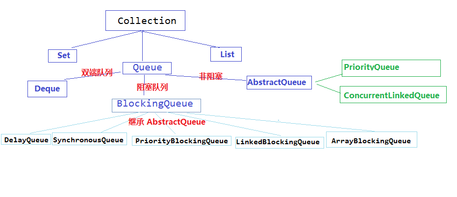

一、集合概述
- 集合：集合是java中提供的一种容器，可以用来存储多个数据。
集合和数组既然都是容器，它们有啥区别呢？
- 数组的长度是固定的。集合的长度是可变的。
- 数组中存储的是同一类型的元素，可以存储基本数据类型值。集合存储的都是对象。而且对象的类型可以不一致。在开发中一般当对象多的时候，使用集合进行存储。
Java的集合类是一些非常实用的工具类，主要用于存储和装载数据 (包括对象)，因此，Java的集合类也被成为容器。在Java中，所有的集合类都位于java.util包下，这些集合类主要是基于两个根接口派生而来，它们就是 Collection和 Map。
首先我要说明的是Map不属于Collection接口。
List、Set和Map区别：
List 和 Set 是存储单列数据的集合，Map 是存储键和值这样的双列数据的集合；List 中存储的数据是有顺序，并
且允许重复；Map 中存储的数据是没有顺序的，其键是不能重复的，它的值是可以有重复的，Set 中存储的数据是无
序的，且不允许有重复，但元素在集合中的位置由元素的 hashcode 决定，位置是固定的（Set 集合根据 hashcode 来进行数据的存储，所以位置是固定的，但是位置不是用户可以控制的，所以对于用户来说 set 中的元素还是无序的）；
二、Collection接口
Collection集合框架图如下：
（图片摘自：https://www.cnblogs.com/janson071/p/9663569.html）
Collection派生出三个子接口，Set代表不可重复的无序集合、List代表可重复的有序集合、Queue是java提供的队列实现，通过它们不断的扩展出很多的集合类。
2.1、Collection 常用功能
Collection是所有单列集合的父接口，因此在Collection中定义了单列集合(List和Set)通用的一些方法，这些方法可用于操作所有的单列集合。方法如下：
public boolean add(E e)： 把给定的对象添加到当前集合中 。public void clear():清空集合中所有的元素。public boolean remove(E e): 把给定的对象在当前集合中删除。public boolean contains(E e): 判断当前集合中是否包含给定的对象。public boolean isEmpty(): 判断当前集合是否为空。public int size(): 返回集合中元素的个数。public Object[] toArray(): 把集合中的元素，存储到数组中。public Iterator<E> iterator()获取迭代器
还有一些操作整个集合的方法：
boolean containsAll(Collection<?> c)是否包含指定集合 c 的全部元素
boolean addAll(Collection<? extends E> c)添加集合 c 中所有的元素到本集合中，如果集合有改变就返回 true
boolean removeAll(Collection<?> c)删除本集合中和 c 集合中一致的元素，如果集合有改变就返回 true
boolean retainAll(Collection<?> c)保留本集合中 c 集合中两者共有的，如果集合有改变就返回 true
void clear()删除所有元素
方法演示：
import java.util.ArrayList;
import java.util.Collection;
public class Demo1Collection {
public static void main(String[] args) {
// 创建集合对象
// 使用多态形式
Collection<String> coll = new ArrayList<String>();
// 使用方法
// 添加功能 boolean add(String s)
coll.add("小李广");
coll.add("扫地僧");
coll.add("石破天");
System.out.println(coll);
// boolean contains(E e) 判断o是否在集合中存在
System.out.println("判断 扫地僧 是否在集合中"+coll.contains("扫地僧"));
//boolean remove(E e) 删除在集合中的o元素
System.out.println("删除石破天："+coll.remove("石破天"));
System.out.println("操作之后集合中元素:"+coll);
// size() 集合中有几个元素
System.out.println("集合中有"+coll.size()+"个元素");
// Object[] toArray()转换成一个Object数组
Object[] objects = coll.toArray();
// 遍历数组
for (int i = 0; i < objects.length; i++) {
System.out.println(objects[i]);
}
// void clear() 清空集合
coll.clear();
System.out.println("集合中内容为："+coll);
// boolean isEmpty() 判断是否为空
System.out.println(coll.isEmpty());
}
}2.2、List接口
2.2.1、概述
List是单列集合的一个重要分治，习惯性地会将实现了List接口的对象称为List结合。
2.2.1.1、List集合特点：
- 它是一个元素存取有序的集合，即元素的存入顺序和取出顺序一致。
- 它是一个带有索引的集合，通过索引就可以精确的操作集合中的元素（与数组的索引是一个道理）。
- 集合中可以有重复的元素，通过元素的equals方法，来比较是否为重复的元素。
2.2.1.2、List接口方法
List作为Collection集合的子接口，不但继承了Collection接口中的全部方法，而且还增加了一些根据元素索引来操作集合的特有方法，如下：
public void add(int index, E element): 将指定的元素，添加到该集合中的指定位置上。public E get(int index):返回集合中指定位置的元素。public E remove(int index): 移除列表中指定位置的元素, 返回的是被移除的元素。public E set(int index, E element):用指定元素替换集合中指定位置的元素,返回值的更新前的元素。
public class ListDemo {
public static void main(String[] args) {
// 创建List集合对象
List<String> list = new ArrayList<String>();
// 往 尾部添加 指定元素
list.add("图图");
list.add("小美");
list.add("不高兴");
System.out.println(list);
// add(int index,String s) 往指定位置添加
list.add(1,"没头脑");
System.out.println(list);
// String remove(int index) 删除指定位置元素 返回被删除元素
// 删除索引位置为2的元素
System.out.println("删除索引位置为2的元素");
System.out.println(list.remove(2));
System.out.println(list);
// String set(int index,String s)
// 在指定位置 进行 元素替代（改）
// 修改指定位置元素
list.set(0, "三毛");
System.out.println(list);
// String get(int index) 获取指定位置元素
// 跟size() 方法一起用 来 遍历的
for(int i = 0;i<list.size();i++){
System.out.println(list.get(i));
}
//还可以使用增强for
for (String string : list) {
System.out.println(string);
}
}
}2.2.1.3、List的三个子类的特点
- ArrayList 底层结构是数组,底层查询快,增删慢。
- LinkedList 底层结构是链表型的,增删快,查询慢。
- voctor 底层结构是数组 线程安全的,增删慢,查询慢。
2.2.2、ArrayList集合类
ArrayList 底层结构是数组,底层查询快,增删慢。
java.util.ArrayList集合数据存储的结构是数组结构。元素增删慢，查找快，由于日常开发中使用最多的功能为查询数据、遍历数据，所以ArrayList是最常用的集合。
ArrayList是List接口的实现类，一种大小可变数组，随着元素的增多，容量会自动扩充，默认初始容量值是10，也可以自己指定初始容量
（1）采用的数据结构：数组
（线性表：数组、链表、队列、栈
非线性表：二叉树、堆、图等）
（2）ArrayList特点：
- ArrayList底层使用了Object的数组作为容器去存储数据
- ArrayList 提供了使用索引的随意访问数据
- ArrayList 是线程非安全的，效率较高，查询速度高
（3）ArrayList优点：
查询速度快
ArrayList缺点：
新增和删除元素比较慢
（4）查询速度快的原因：
ArrayList底层是数组实现的，根据下标查询，不需要比较，查询方式为，首地址+（元素长度＊下标），基于这个位置读取相应的字节数，所以非常快；
（5）新增和删除慢的原因：
增删会带来元素的移动，增加数据会向后移动，删除数据会向前移动，所以影响效率
（6）适用场景：
如果应用程序对数据有较多的随机访问使用ArrayList较好
（7）List a=new ArrayList()和 ArrayList a =new ArrayList()的区别？
List list = new ArrayList();这句创建了一个 ArrayList 的对象后把上溯到了 List。此时它是一个 List 对象了，有些
ArrayList 有但是 List 没有的属性和方法，它就不能再用了。而 ArrayList list=new ArrayList();创建一对象则保留了
ArrayList 的所有属性。 所以需要用到 ArrayList 独有的方法的时候不能用前者。实例代码如下：
List list = new ArrayList();
ArrayList arrayList = new ArrayList();
list.trimToSize(); //错误，没有该方法。
arrayList.trimToSize(); //ArrayList 里有该方法。（8）数组扩容
这是对ArrayList效率影响比较大的一个因素。
每当执行Add、AddRange、Insert、InsertRange等添加元素的方法，都会检查内部数组的容量是否不够了，如果是，它就会以当前容量的两倍来重新构建一个数组，将旧元素Copy到新数组中，然后丢弃旧数组，在这个临界点的扩容操作，应该来说是比较影响效率的。
例1：比如，一个可能有200个元素的数据动态添加到一个以默认16个元素大小创建的ArrayList中，将会经过：
162222 = 256
四次的扩容才会满足最终的要求，那么如果一开始就以：
ArrayList List = new ArrayList( 210 );
的方式创建ArrayList，不仅会减少4次数组创建和Copy的操作，还会减少内存使用。
例2：预计有30个元素而创建了一个ArrayList：
ArrayList List = new ArrayList(30);
在执行过程中，加入了31个元素，那么数组会扩充到60个元素的大小，而这时候不会有新的元素再增加进来，而且有没有调用TrimSize方法，那么就有1次扩容的操作，并且浪费了29个元素大小的空间。如果这时候，用：
ArrayList List = new ArrayList(40);
那么一切都解决了。
所以说，正确的预估可能的元素，并且在适当的时候调用TrimSize方法是提高ArrayList使用效率的重要途径。
2.2.3、LinkedList集合类
LinkedList 底层结构是链表型的,增删快,查询慢。
java.util.LinkedList集合数据存储的结构是链表结构。方便元素添加、删除的集合。
实际开发中对一个集合元素的添加与删除经常涉及到首尾操作，而LinkedList提供了大量首尾操作的方法。这些方法我们作为了解即可：
public void addFirst(E e):将指定元素插入此列表的开头。public void addLast(E e):将指定元素添加到此列表的结尾。public E getFirst():返回此列表的第一个元素。public E getLast():返回此列表的最后一个元素。public E removeFirst():移除并返回此列表的第一个元素。public E removeLast():移除并返回此列表的最后一个元素。public E pop():从此列表所表示的堆栈处弹出一个元素。public void push(E e):将元素推入此列表所表示的堆栈。public boolean isEmpty()：如果列表不包含元素，则返回true。
LinkedList是List的子类，List中的方法LinkedList都是可以使用，这里就不做详细介绍，我们只需要了解LinkedList的特有方法即可。在开发时，LinkedList集合也可以作为堆栈，队列的结构使用。（了解即可）
方法演示：
public class LinkedListDemo {
public static void main(String[] args) {
LinkedList<String> link = new LinkedList<String>();
//添加元素
link.addFirst("abc1");
link.addFirst("abc2");
link.addFirst("abc3");
System.out.println(link);
// 获取元素
System.out.println(link.getFirst());
System.out.println(link.getLast());
// 删除元素
System.out.println(link.removeFirst());
System.out.println(link.removeLast());
while (!link.isEmpty()) { //判断集合是否为空
System.out.println(link.pop()); //弹出集合中的栈顶元素
}
System.out.println(link);
}
}其他1、ArrayList 和 Linkedlist 区别：
ArrayList 和 Vector 使用了数组的实现，可以认为 ArrayList 或者 Vector 封装了对内部数组的操作，比如向数组
中添加，删除，插入新的元素或者数据的扩展和重定向。
LinkedList 使用了循环双向链表数据结构。与基于数组的 ArrayList 相比，这是两种截然不同的实现技术，这也决
定了它们将适用于完全不同的工作场景。
LinkedList 链表由一系列表项连接而成。一个表项总是包含 3 个部分：元素内容，前驱表和后驱表，如图所示：
在下图展示了一个包含 3 个元素的 LinkedList 的各个表项间的连接关系。在 JDK 的实现中，无论 LikedList 是否
为空，链表内部都有一个 header 表项，它既表示链表的开始，也表示链表的结尾。表项 header 的后驱表项便是链表
中第一个元素，表项 header 的前驱表项便是链表中最后一个元素。
其他2、List a=new ArrayList()和 ArrayList a =new ArrayList()的区别
List list = new ArrayList();这句创建了一个 ArrayList 的对象后把上溯到了 List。此时它是一个 List 对象了，有些
ArrayList 有但是 List 没有的属性和方法，它就不能再用了。而 ArrayList list=new ArrayList();创建一对象则保留了
ArrayList 的所有属性。 所以需要用到 ArrayList 独有的方法的时候不能用前者。实例代码如下：
1．List list = new ArrayList();
2．ArrayList arrayList = new ArrayList();
3．list.trimToSize(); //错误，没有该方法。
4．arrayList.trimToSize(); //ArrayList 里有该方法。其他3、要对集合更新操作时，ArrayList 和 LinkedList 哪个更适合
ArrayList 和 LinkedList 在性能上各有优缺点，都有各自所适用的地方，总的说来可以描述如下：
1．对 ArrayList 和 LinkedList 而言，在列表末尾增加一个元素所花的开销都是固定的。对 ArrayList 而言，主要是在内部数组中增加一项，指向所添加的元素，偶 尔可能会导致对数组重新进行分配；而对 LinkedList 而言，这个开销是统一的，分配一个内部 Entry 对象。
2．在 ArrayList 的中间插入或删除一个元素意味着这个列表中剩余的元素都会被移动；而在 LinkedList 的中间插入或删除一个元素的开销是固定的。
3．LinkedList 不支持高效的随机元素访问。
4．ArrayList 的空间浪费主要体现在在 list 列表的结尾预留一定的容量空间，而 LinkedList 的空间花费则体现在它的每一个元素都需要消耗相当的空间
可以这样说：当操作是在一列数据的后面添加数据而不是在前面或中间,并且需要随机地访问其中的元素时,使用ArrayList 会提供比较好的性能；当你的操作是在一列数据的前面或中间添加或删除数据,并且按照顺序访问其中的元 素时,就应该使用 LinkedList 了。
2.2.4、Vector
voctor 底层结构是数组 线程安全的,增删慢,查询慢。
Vector非常类似ArrayList，但是Vector是同步的，效率相对比较低
Vector实现了Serializable接口，支持序列化，实现了Cloneable接口，能被克隆，实现了RandomAccess接口，支持快速随机访问。
Vector的底层结构也是数组，但是它们对数组的扩容方式不同
当Vector或ArrayList中的元素超过它的初始大小时,Vector会将它的容量翻倍,而ArrayList只增加50%的大小，这样ArrayList就有利于节约内存空间。即Vector增长原来的一倍，ArrayList增加原来的0.5倍。
Stack栈继承于Vector，栈的存储特点是后进先出，它基于动态数组实现的一个线程安全的栈，所以栈是线程安全的
java.util.vector提供了向量类(vector)以实现类似动态数组的功能。在Java语言中没有指针的概念，但如果正确灵活地使用指针又确实可以大大提高程序的质量。比如在c,c++中所谓的“动态数组”一般都由指针来实现。为了弥补这个缺点，Java提供了丰富的类库来方便编程者使用，vector类便是其中之一。事实上，灵活使用数组也可以完成向量类的功能，但向量类中提供大量的方法大大方便了用户的使用。
创建了一个向量类的对象后，可以往其中随意插入不同类的对象，即不需顾及类型也不需预先选定向量的容量，并可以方便地进行查找。对于预先不知或者不愿预先定义数组大小，并且需要频繁地进行查找，插入，删除工作的情况。可以考虑使用向量类。
Vector与ArrayList的区别：
- Vector是线程安全的, ArrayList不是线程安全的, 这是最主要的
- Vector类中的方法很多有synchronized进行修饰，这样就导致了Vector效率低，不能与ArrayList相比。
- 两者都是采用线性连续空间存储元素，当空间不足时，两者的扩容方式不同。ArrayList不可以设置扩展的容量, 默认1.5倍; Vector可以设置, 默认2倍
- ArrayList无参构造函数中初始量为0; Vector的无参构造函数初始容量为10
向量类提供了三种构造方法：
public vector()
public vector(int initialcapacity,int capacityIncrement)
public vector(int initialcapacity)使用第一种方法系统会自动对向量进行管理，若使用后两种方法。则系统将根据参数，initialcapacity设定向量对象的容量（即向量对象可存储数据的大小），当真正存放的数据个数超过容量时。系统会扩充向量对象存储容量。
参数capacityincrement给定了每次扩充的扩充值。当capacityincrement为0的时候，则没次扩充一倍，利用这个功能可以优化存储。
在Vector类中提供了各种方法方便用户的使用：
很多方法都加入了synchronized同步语句，来保证线程安全。
插入功能：
（1）public final synchronized void adddElement(Object obj)
将obj插入向量的尾部。obj可以是任何类型的对象。对同一个向量对象，亦可以在其中插入不同类的对象。但插入的应是对象而不是数值，所以插入数值时要注意将数组转换成相应的对象。
例如：要插入整数1时，不要直接调用v1.addElement(1),正确的方法为： Vector v1 = new Vector();
Integer integer1 = new Integer(1); v1.addElement(integer1);
(2)public final synchronized void setElementAt(Object obj,int index)
将index处的对象设置成obj，原来的对象将被覆盖。
(3)public final synchronized void insertElementAt(Object obj,int
index) 在index指定的位置插入obj，原来对象以及此后的对象依次往后顺延。
删除功能：
(1)public final synchronized void removeElement(Object obj)
从向量中删除obj,若有多个存在，则从向量头开始试，删除找到的第一个与obj相同的向量成员。 (2)public final
synchronized void removeAllElement(); 删除向量所有的对象 (3)public fianl
synchronized void removeElementAt(int index) 删除index所指的地方的对象
查询搜索功能：
(1)public final int indexOf(Object obj)
从向量头开始搜索obj,返回所遇到的第一个obj对应的下标，若不存在此obj,返回-1.
(2)public final synchronized int indexOf(Object obj,int index)
从index所表示的下标处开始搜索obj.
(3)public final int lastindexOf(Object obj) 从向量尾部开始逆向搜索obj.
(4)public final synchornized int lastIndex(Object obj,int index)
从index所表示的下标处由尾至头逆向搜索obj.
(5)public final synchornized firstElement() 获取向量对象中的首个obj
(6)public final synchornized Object lastElement() 获取向量对象的最后一个obj
2.3、Set接口
2.3.1、概述
存储的数据是无序的，且不允许有重复，但元素在集合中的位置由元素的 hashcode 决定，位置是固定的（Set 集合根据 hashcode 来进行数据的存储，所以位置是固定的，但是位置不是用户可以控制的，所以对于用户来说 set 中的元素还是无序的）；
它与Collection接口中的方法基本一致，并没有对Collection接口进行功能上的扩充，只是比Collection接口更加严格了。与List接口不同的是，Set接口中元素无序，并且都会以某种规则保证存入的元素不出现重复。
HashSet是根据对象的哈希值来确定元素在集合中的存储位置，因此具有良好的存取和查找性能。保证元素唯一性（== 或 eqauls）的方式依赖于：hashCode与equals方法。
Set集合取出元素的方式可以采用：迭代器、增强for。
Set 接口有两个实现类（HashSet：底层是由 HashMap 实现，不允许集合中有重复的值，使用该方式时需要重写 equals()和 hashCode()方法；LinkedHashSet：继承与 HashSet，同时又基于 LinkedHashMap 来进行实现，底层使用的是 LinkedHashMp）。
2.3.2、List和Set的区别
List , Set 都是继承自 Collection 接口
List 特点：元素有放入顺序，元素可重复 ，
Set 特点：元素无放入顺序，元素不可重复，重复元素会覆盖掉，（元素虽然无放入顺序，但是元素在set中的位置是有该元素HashCode 决定的，其位置其实是固定的，加入Set 的 Object 必须定义 equals ()方法 ，另外list 支持for循环，也就是通过下标来遍历，也可以用迭代器，但是set只能用迭代，因为他无序，无法用下标来取得想 要的值。） Set和List对比 Set：检索元素效率低下，删除和插入效率高，插入和删除不会引起元素位置改变。 List：和数组类似，List可以动态增长，查找元素效率高，插入删除元素效率低，因为会引起其他元素位置改变
2.3.3、HashSet类
HashSet数据结构：哈希表（数组+链表）
什么是哈希表呢？
哈希表底层使用的也是数组机制，数组中也存放对象，而这些对象往数组中存放时的位置比较特殊，当需要把这些对象给数组中存放时，那么会根据这些对象的特有数据结合相应的算法，计算出这个对象在数组中的位置，然后把这个对象存放在数组中。而这样的数组就称为哈希数组，即就是哈希表。
在JDK1.8之前，哈希表底层采用数组+链表实现，即使用链表处理冲突，同一hash值的链表都存储在一个链表里。但是当位于一个桶中的元素较多，即hash值相等的元素较多时，通过key值依次查找的效率较低。而JDK1.8中，哈希表存储采用数组+链表+红黑树实现，当链表长度超过阈值（8）时，将链表转换为红黑树，这样大大减少了查找时间。
简单的来说，哈希表是由数组+链表+红黑树（JDK1.8增加了红黑树部分）实现的，如下图所示。

看到这张图就有人要问了，这个是怎么存储的呢？
为了方便大家的理解我们结合一个存储流程图来说明一下：

总而言之，JDK1.8引入红黑树大程度优化了HashMap的性能，那么对于我们来讲保证HashSet集合元素的唯一，其实就是根据对象的hashCode和equals方法来决定的。如果我们往集合中存放自定义的对象，那么保证其唯一，就必须复写hashCode和equals方法建立属于当前对象的比较方式。
给HashSet中存放自定义类型元素时，需要重写对象中的hashCode和equals方法，建立自己的比较方式，才能保证HashSet集合中的对象唯一
创建自定义Student类
public class Student {
private String name;
private int age;
public Student() {
}
public Student(String name, int age) {
this.name = name;
this.age = age;
}
public String getName() {
return name;
}
public void setName(String name) {
this.name = name;
}
public int getAge() {
return age;
}
public void setAge(int age) {
this.age = age;
}
@Override
public boolean equals(Object o) {
if (this == o)
return true;
if (o == null || getClass() != o.getClass())
return false;
Student student = (Student) o;
return age == student.age &&
Objects.equals(name, student.name);
}
@Override
public int hashCode() {
return Objects.hash(name, age);
}
}public class HashSetDemo2 {
public static void main(String[] args) {
//创建集合对象 该集合中存储 Student类型对象
HashSet<Student> stuSet = new HashSet<Student>();
//存储
Student stu = new Student("于谦", 43);
stuSet.add(stu);
stuSet.add(new Student("郭德纲", 44));
stuSet.add(new Student("于谦", 43));
stuSet.add(new Student("郭麒麟", 23));
stuSet.add(stu);
for (Student stu2 : stuSet) {
System.out.println(stu2);
}
}
}
执行结果：
Student [name=郭德纲, age=44]
Student [name=于谦, age=43]
Student [name=郭麒麟, age=23]2.3.4、LinkedHashSet类
我们知道HashSet保证元素唯一，可是元素存放进去是没有顺序的，那么我们要保证有序，怎么办呢？
在HashSet下面有一个子类java.util.LinkedHashSet，它是链表和哈希表组合的一个数据存储结构。
演示代码如下:
public class LinkedHashSetDemo {
public static void main(String[] args) {
Set<String> set = new LinkedHashSet<String>();
set.add("bbb");
set.add("aaa");
set.add("abc");
set.add("bbc");
Iterator<String> it = set.iterator();
while (it.hasNext()) {
System.out.println(it.next());
}
}
}
结果：
bbb
aaa
abc
bbc特点：
- 具有set集合不重复的特点，同时具有可预测的迭代顺序，也就是我们插入的顺序。
- 是一个非线程安全的集合。如果有多个线程同时访问当前linkedhashset集合容器，并且有一个线程对当前容器中的元素做了修改，那么必须要在外部实现同步保证数据的冥等性。
- LinkedHashSet集合同样是根据元素的hashCode值来决定元素的存储位置，但是它同时使用链表维护元素的次序。这样使得元素看起 来像是以插入顺序保存的，也就是说，当遍历该集合时候，LinkedHashSet将会以元素的添加顺序访问集合的元素。
- LinkedHashSet在迭代访问Set中的全部元素时，性能比HashSet好，但是插入时性能稍微逊色于HashSet。
2.3.5、TreeSet类
TreeSet是SortedSet接口的唯一实现类，TreeSet可以确保集合元素处于排序状态。
TreeSet并不是根据元素的插入顺序进行排序,而是根据元素实际值来进行排序.(可以确保元素唯一并且元素排序) TreeSet采用红黑树的数据结构对元素进行排序.
TreeSet支持两种排序方式，自然排序 和定制排序，其中自然排序为默认的排序方式(Integer类型元素自然升序)。向TreeSet中加入的应该是同一个类的对象。
TreeSet判断两个对象不相等的方式是两个对象通过equals方法返回false，或者通过CompareTo方法比较没有返回0
自然排序
自然排序使用要排序元素的CompareTo（Object obj）方法来比较元素之间大小关系，然后将元素按照升序排列。
Java提供了一个Comparable接口，该接口里定义了一个compareTo(Object obj)方法，该方法返回一个整数值，实现了该接口的对象就可以比较大小。
obj1.compareTo(obj2)方法如果返回0，则说明被比较的两个对象相等，如果返回一个正数，则表明obj1大于obj2，如果是 负数，则表明obj1小于obj2。
如果我们将两个对象的equals方法总是返回true，则这两个对象的compareTo方法返回应该返回0
定制排序
自然排序是根据集合元素的大小，以升序排列，如果要定制排序，应该使用Comparator接口，实现 int compare(T o1,T o2)方法
2.4、Queue
本节转自：https://www.cnblogs.com/lemon-flm/p/7877898.html
Queue： 基本上，一个队列就是一个先入先出（FIFO）的数据结构
Queue接口与List、Set同一级别，都是继承了Collection接口。LinkedList实现了Deque接 口。
Queue接口与List、Set同一级别，都是继承了Collection接口。LinkedList实现了Queue接 口。Queue接口窄化了对LinkedList的方法的访问权限（即在方法中的参数类型如果是Queue时，就完全只能访问Queue接口所定义的方法 了，而不能直接访问 LinkedList的非Queue的方法），以使得只有恰当的方法才可以使用。BlockingQueue 继承了Queue接口。
队列是一种数据结构．它有两个基本操作：在队列尾部加人一个元素，和从队列头部移除一个元素就是说，队列以一种先进先出的方式管理数据，如果你试图向一个 已经满了的阻塞队列中添加一个元素或者是从一个空的阻塞队列中移除一个元索，将导致线程阻塞．在多线程进行合作时，阻塞队列是很有用的工具。工作者线程可 以定期地把中间结果存到阻塞队列中而其他工作者线线程把中间结果取出并在将来修改它们。队列会自动平衡负载。如果第一个线程集运行得比第二个慢，则第二个 线程集在等待结果时就会阻塞。如果第一个线程集运行得快，那么它将等待第二个线程集赶上来。
Queue的实现
1、没有实现的阻塞接口的LinkedList： 实现了java.util.Queue接口和java.util.AbstractQueue接口
内置的不阻塞队列： PriorityQueue 和 ConcurrentLinkedQueue
PriorityQueue 和 ConcurrentLinkedQueue 类在 Collection Framework 中加入两个具体集合实现。
PriorityQueue 类实质上维护了一个有序列表。加入到 Queue 中的元素根据它们的天然排序（通过其 java.util.Comparable 实现）或者根据传递给构造函数的 java.util.Comparator 实现来定位。
ConcurrentLinkedQueue 是基于链接节点的、线程安全的队列。并发访问不需要同步。因为它在队列的尾部添加元素并从头部删除它们，所以只要不需要知道队列的大 小， ConcurrentLinkedQueue 对公共集合的共享访问就可以工作得很好。收集关于队列大小的信息会很慢，需要遍历队列。
2)实现阻塞接口的：
java.util.concurrent 中加入了 BlockingQueue 接口和五个阻塞队列类。它实质上就是一种带有一点扭曲的 FIFO 数据结构。不是立即从队列中添加或者删除元素，线程执行操作阻塞，直到有空间或者元素可用。
五个队列所提供的各有不同：
* ArrayBlockingQueue ：一个由数组支持的有界队列。
* LinkedBlockingQueue ：一个由链接节点支持的可选有界队列。
* PriorityBlockingQueue ：一个由优先级堆支持的无界优先级队列。
* DelayQueue ：一个由优先级堆支持的、基于时间的调度队列。
* SynchronousQueue ：一个利用 BlockingQueue 接口的简单聚集（rendezvous）机制。

下表显示了jdk1.5中的阻塞队列的操作：
add 增加一个元索 如果队列已满，则抛出一个IIIegaISlabEepeplian异常
remove 移除并返回队列头部的元素 如果队列为空，则抛出一个NoSuchElementException异常
element 返回队列头部的元素 如果队列为空，则抛出一个NoSuchElementException异常
offer 添加一个元素并返回true 如果队列已满，则返回false
poll 移除并返问队列头部的元素 如果队列为空，则返回null
peek 返回队列头部的元素 如果队列为空，则返回null
put 添加一个元素 如果队列满，则阻塞
take 移除并返回队列头部的元素 如果队列为空，则阻塞
remove、element、offer 、poll、peek 其实是属于Queue接口。
阻塞队列的操作可以根据它们的响应方式分为以下三类：aad、removee和element操作在你试图为一个已满的队列增加元素或从空队列取得元素时 抛出异常。当然，在多线程程序中，队列在任何时间都可能变成满的或空的，所以你可能想使用offer、poll、peek方法。这些方法在无法完成任务时 只是给出一个出错示而不会抛出异常。
注意：poll和peek方法出错进返回null。因此，向队列中插入null值是不合法的
最后，我们有阻塞操作put和take。put方法在队列满时阻塞，take方法在队列空时阻塞。
ArrayBlockingQueue在构造时需要指定容量， 并可以选择是否需要公平性，如果公平参数被设置true，等待时间最长的线程会优先得到处理（其实就是通过将ReentrantLock设置为true来 达到这种公平性的：即等待时间最长的线程会先操作）。通常，公平性会使你在性能上付出代价，只有在的确非常需要的时候再使用它。它是基于数组的阻塞循环队 列，此队列按 FIFO（先进先出）原则对元素进行排序。
PriorityBlockingQueue是一个带优先级的 队列，而不是先进先出队列。元素按优先级顺序被移除，该队列也没有上限（看了一下源码，PriorityBlockingQueue是对 PriorityQueue的再次包装，是基于堆数据结构的，而PriorityQueue是没有容量限制的，与ArrayList一样，所以在优先阻塞 队列上put时是不会受阻的。虽然此队列逻辑上是无界的，但是由于资源被耗尽，所以试图执行添加操作可能会导致 OutOfMemoryError），但是如果队列为空，那么取元素的操作take就会阻塞，所以它的检索操作take是受阻的。另外，往入该队列中的元 素要具有比较能力。
DelayQueue（基于PriorityQueue来实现的）是一个存放Delayed 元素的无界阻塞队列，只有在延迟期满时才能从中提取元素。该队列的头部是延迟期满后保存时间最长的 Delayed 元素。如果延迟都还没有期满，则队列没有头部，并且poll将返回null。当一个元素的 getDelay(TimeUnit.NANOSECONDS) 方法返回一个小于或等于零的值时，则出现期满，poll就以移除这个元素了。此队列不允许使用 null 元素。
三、Map
3.1、关于Map
3.1.1、概述
Map 中存储的数据是没有顺序的，其键是不能重复的，它的值是可以有重复的
现实生活中，我们常会看到这样的一种集合：IP地址与主机名，身份证号与个人，系统用户名与系统用户对象等，这种一一对应的关系，就叫做映射。Java提供了专门的集合类用来存放这种对象关系的对象，即java.util.Map接口。
我们通过查看Map接口描述，发现Map接口下的集合与Collection接口下的集合，它们存储数据的形式不同，如下图。

Collection中的集合，元素是孤立存在的（理解为单身），向集合中存储元素采用一个个元素的方式存储。Map中的集合，元素是成对存在的(理解为夫妻)。每个元素由键与值两部分组成，通过键可以找对所对应的值。Collection中的集合称为单列集合，Map中的集合称为双列集合。- 需要注意的是，
Map中的集合不能包含重复的键，值可以重复；每个键只能对应一个值
3.1.2、常用子类
HashMap
存储数据采用的哈希表结构，元素的存取顺序不能保证一致。由于要保证键的唯一、不重复，需要重写键的hashCode()方法、equals()方法。它是最常用的Map,它根据键的HashCode 值存储数据,根据键可以直接获取它的值，具有很快的访问速度。HashMap最多只允许一条记录的键为Null(多条会覆盖);允许多条记录的值为 Null。非同步的。
LinkedHashMap
HashMap下有个子类LinkedHashMap，存储数据采用的哈希表结构+链表结构。通过链表结构可以保证元素的存取顺序一致；通过哈希表结构可以保证的键的唯一、不重复，需要重写键的hashCode()方法、equals()方法。保存了记录的插入顺序，在用Iterator遍历LinkedHashMap时，先得到的记录肯定是先插入的.在遍历的时候会比HashMap慢。key和value均允许为空，非同步的。
TreeMap
能够把它保存的记录根据键(key)排序,默认是按升序排序，也可以指定排序的比较器，当用Iterator 遍历TreeMap时，得到的记录是排过序的。TreeMap不允许key的值为null。非同步的。
Hashtable
与 HashMap类似,不同的是:key和value的值均不允许为null;它支持线程的同步，即任一时刻只有一个线程能写Hashtable,因此也导致了Hashtale在写入时会比较慢。
3.1.3、常用方法
Map接口中定义了很多方法，常用的如下：
public V put(K key, V value): 把指定的键与指定的值添加到Map集合中。public V remove(Object key): 把指定的键 所对应的键值对元素 在Map集合中删除，返回被删除元素的值。public V get(Object key)根据指定的键，在Map集合中获取对应的值。boolean containsKey(Object key)判断集合中是否包含指定的键。public Set<K> keySet(): 获取Map集合中所有的键，存储到Set集合中。public Set<Map.Entry<K,V>> entrySet(): 获取到Map集合中所有的键值对对象的集合(Set集合)。
Map接口的方法演示
public class MapDemo {
public static void main(String[] args) {
//创建 map对象
HashMap<String, String> map = new HashMap<String, String>();
//添加元素到集合
map.put("黄晓明", "杨颖");
map.put("文章", "马伊琍");
map.put("邓超", "孙俪");
System.out.println(map);
//String remove(String key)
System.out.println(map.remove("邓超"));
System.out.println(map);
// 想要查看 黄晓明的媳妇 是谁
System.out.println(map.get("黄晓明"));
System.out.println(map.get("邓超"));
}
}tips:
使用put方法时，若指定的键(key)在集合中没有，则没有这个键对应的值，返回null，并把指定的键值添加到集合中；
若指定的键(key)在集合中存在，则返回值为集合中键对应的值（该值为替换前的值），并把指定键所对应的值，替换成指定的新值。
3.1.4、Map遍历
3.1.4.1、初始化数据
Map<String, String> map = ``new` `HashMap<String, String>();
map.put(``"key1"``, ``"value1"``);
map.put(``"key2"``, ``"value2"``);3.1.4.2、增强for循环遍历
（1）使用keySet()遍历
for (String key : map.keySet()) {
System.out.println(key + " ：" + map.get(key));
}也叫遍历键找值方式：即通过元素中的键，获取键所对应的值
分析步骤：
- 获取Map中所有的键，由于键是唯一的，所以返回一个Set集合存储所有的键。方法提示:
keyset() - 遍历键的Set集合，得到每一个键。
- 根据键，获取键所对应的值。方法提示:
get(K key)
代码演示：
public class MapDemo01 {
public static void main(String[] args) {
//创建Map集合对象
HashMap<String, String> map = new HashMap<String,String>();
//添加元素到集合
map.put("胡歌", "霍建华");
map.put("郭德纲", "于谦");
map.put("薛之谦", "大张伟");
//获取所有的键 获取键集
Set<String> keys = map.keySet();
// 遍历键集 得到 每一个键
for (String key : keys) {
//key 就是键
//获取对应值
String value = map.get(key);
System.out.println(key+"的CP是："+value);
}
}
}遍历图解：

（2）使用entrySet()遍历
for (Map.Entry<String, String> entry : map.entrySet()) {
System.out.println(entry.getKey() + " ：" + entry.getValue());
}1）Entry键值对对象
我们已经知道，Map中存放的是两种对象，一种称为key(键)，一种称为value(值)，它们在在Map中是一一对应关系，这一对对象又称做Map中的一个Entry(项)。Entry将键值对的对应关系封装成了对象。即键值对对象，这样我们在遍历Map集合时，就可以从每一个键值对（Entry）对象中获取对应的键与对应的值。
既然Entry表示了一对键和值，那么也同样提供了获取对应键和对应值得方法：
public K getKey()：获取Entry对象中的键。public V getValue()：获取Entry对象中的值。
在Map集合中也提供了获取所有Entry对象的方法：
public Set<Map.Entry<K,V>> entrySet(): 获取到Map集合中所有的键值对对象的集合(Set集合)。
2）遍历键值对方式
键值对方式：即通过集合中每个键值对(Entry)对象，获取键值对(Entry)对象中的键与值。
操作步骤与图解：
获取Map集合中，所有的键值对(Entry)对象，以Set集合形式返回。方法提示:
entrySet()。遍历包含键值对(Entry)对象的Set集合，得到每一个键值对(Entry)对象。
通过键值对(Entry)对象，获取Entry对象中的键与值。 方法提示:
getkey() getValue()
public class MapDemo02 {
public static void main(String[] args) {
// 创建Map集合对象
HashMap<String, String> map = new HashMap<String,String>();
// 添加元素到集合
map.put("胡歌", "霍建华");
map.put("郭德纲", "于谦");
map.put("薛之谦", "大张伟");
// 获取 所有的 entry对象 entrySet
Set<Entry<String,String>> entrySet = map.entrySet();
// 遍历得到每一个entry对象
for (Entry<String, String> entry : entrySet) {
// 解析
String key = entry.getKey();
String value = entry.getValue();
System.out.println(key+"的CP是:"+value);
}
}
}遍历图解：

tips：Map集合不能直接使用迭代器或者foreach进行遍历。但是转成Set之后就可以使用了。
3.1.4.3、迭代器遍历
使用keySet()遍历
Iterator<String> iterator = map.keySet().iterator();
while (iterator.hasNext()) {
String key = iterator.next();
System.out.println(key + " ：" + map.get(key));
}使用entrySet()遍历
Iterator<Map.Entry<String, String>> iterator = map.entrySet().iterator();
while (iterator.hasNext()) {
Map.Entry<String, String> entry = iterator.next();
System.out.println(entry.getKey() + " ：" + entry.getValue());
}3.1.4.4、HashMap遍历方式对比：
- 增强for循环使用方便，但性能较差，不适合处理超大量级的数据。
- 迭代器的遍历速度要比增强for循环快很多，是增强for循环的2倍左右。
- 使用entrySet遍历的速度要比keySet快很多，是keySet的1.5倍左右。
3.2、HashMap接口
3.2.1、HashMap的数据结构
数组+单链表（数组中的每个元素都是单链表的头节点）
使用链表的原因是解决哈希冲突的（即不同的key映射到了数组的同一位置处，就将其放入单链表中）
哈希冲突
如果两个不同的元素，通过哈希函数得出的实际存储地址相同怎么办？也就是说，当我们对某个元素进行哈希运算，得到一个存储地址，然后要进行插入的时候，发现已经被其他元素占用了，其实这就是所谓的哈希冲突，也叫哈希碰撞。前面我们提到过，哈希函数的设计至关重要，好的哈希函数会尽可能地保证 计算简单和散列地址分布均匀,但是，我们需要清楚的是，数组是一块连续的固定长度的内存空间，再好的哈希函数也不能保证得到的存储地址绝对不发生冲突。那么哈希冲突如何解决呢？哈希冲突的解决方案有多种:开放定址法（发生冲突，继续寻找下一块未被占用的存储地址），再散列函数法，链地址法，而HashMap即是采用了链地址法，也就是数组+链表的方式。
HashMap 继承于AbstractMap，实现了Map、Cloneable、java.io.Serializable接口。
HashMap 的实现不是同步的，这意味着它不是线程安全的。它的key、value都可以为null。此外，HashMap中的映射不是有序的。
HashMap中的key-value都是存储在Entry数组中的。
Entry 实际上就是一个单向链表。这也是为什么我们说HashMap是通过拉链法解决哈希冲突的。
Entry 实现了Map.Entry 接口，即实现getKey(), getValue(), setValue(V value), equals(Object o), hashCode()这些函数。这些都是基本的读取/修改key、value值的函数。

简单来说，HashMap由数组+链表组成的，数组是HashMap的主体，链表则是主要为了解决哈希冲突而存在的，如果定位到的数组位置不含链表（当前entry的next指向null）,那么查找，添加等操作很快，仅需一次寻址即可；如果定位到的数组包含链表，对于添加操作，其时间复杂度为O(n)，首先遍历链表，存在即覆盖，否则新增；对于查找操作来讲，仍需遍历链表，然后通过key对象的equals方法逐一比对查找。所以，性能考虑，HashMap中的链表出现越少，性能才会越好。
3.2.2、HashMap的构造函数
// 默认构造函数。
HashMap()
// 指定“容量大小”的构造函数
HashMap(int capacity)
// 指定“容量大小”和“加载因子”的构造函数
HashMap(int capacity, float loadFactor)
// 包含“子Map”的构造函数
HashMap(Map<? extends K, ? extends V> map)3.2.3、主要方法
clear()：清空HashMap
containsKey() ：判断HashMap是否包含key。
containsValue() 的作用是判断HashMap是否包含“值为value”的元素。
entrySet()的作用是返回“HashMap中所有Entry的集合”，它是一个集合
get() 的作用是获取key对应的value
put() 的作用是对外提供接口，让HashMap对象可以通过put()将“key-value”添加到HashMap中。
putAll() 的作用是将”m”的全部元素都添加到HashMap中
remove() 的作用是删除“键为key”元素
3.2.4、线程安全问题
不是线程安全的；
如果有两个线程A和B，都进行插入数据，刚好这两条不同的数据经过哈希计算后得到的哈希码是一样的，且该位 置还没有其他的数据。所以这两个线程都会进入我在上面标记为1的代码中。假设一种情况，线程A通过if判断，该 位置没有哈希冲突，进入了if语句，还没有进行数据插入，这时候 CPU 就把资源让给了线程B，线程A停在了if语句 里面，线程B判断该位置没有哈希冲突（线程A的数据还没插入），也进入了if语句，线程B执行完后，轮到线程A执 行，现在线程A直接在该位置插入而不用再判断。这时候，你会发现线程A把线程B插入的数据给覆盖了。发生了线 程不安全情况。本来在 HashMap 中，发生哈希冲突是可以用链表法或者红黑树来解决的，但是在多线程中，可能 就直接给覆盖了。
上面所说的是一个图来解释可能更加直观。如下面所示，两个线程在同一个位置添加数据，后面添加的数据就覆盖 住了前面添加的。

如果上述插入是插入到链表上，如两个线程都在遍历到最后一个节点，都要在最后添加一个数据，那么后面添加数 据的线程就会把前面添加的数据给覆盖住。则

3.2.5、HashMap 的扩容过程
当向容器添加元素的时候，会判断当前容器的元素个数，如果大于等于阈值—即当前数组的长度乘以加载因子的值的时候，就要自动扩容啦。HashMap的数组长度一定是2的次幂
扩容( resize )就是重新计算容量，向 HashMap 对象里不停的添加元素，而 HashMap 对象内部的数组无法装载更 多的元素时，对象就需要扩大数组的长度，以便能装入更多的元素。当然 Java 里的数组是无法自动扩容的，方法 是使用一个新的数组代替已有的容量小的数组，就像我们用一个小桶装水，如果想装更多的水，就得换大水桶。
HashMap hashMap=new HashMap(cap);
cap =3， hashMap 的容量为4；
cap =4， hashMap 的容量为4；
cap =5， hashMap 的容量为8；
cap =9， hashMap 的容量为16；
如果 cap 是2的n次方，则容量为 cap ，否则为大于 cap 的第一个2的n次方的数。
3.2.6、HashMap1.7和1.8的区别
在 JDK1.7 及之前的版本中， HashMap 又叫散列链表：基于一个数组以及多个链表的实现，hash值冲突的时候， 就将对应节点以链表的形式存储。
JDK1.8 中，当同一个hash值（ Table 上元素）的链表节点数不小于8时，将不再以单链表的形式存储了，会被 调整成一颗红黑树。这就是 JDK7 与 JDK8 中 HashMap 实现的最大区别。
其下基于 JDK1.7.0_80 与 JDK1.8.0_66 做的分析
JDK1.7中
使用一个 Entry 数组来存储数据，用key的 hashcode 取模来决定key会被放到数组里的位置，如果 hashcode 相 同，或者 hashcode 取模后的结果相同（ hash collision ），那么这些 key 会被定位到 Entry 数组的同一个 格子里，这些 key 会形成一个链表。
在 hashcode 特别差的情况下，比方说所有key的 hashcode 都相同，这个链表可能会很长，那么 put/get 操作 都可能需要遍历这个链表，也就是说时间复杂度在最差情况下会退化到 O(n)
JDK1.8中
使用一个 Node 数组来存储数据，但这个 Node 可能是链表结构，也可能是红黑树结构
如果插入的 key 的 hashcode 相同，那么这些key也会被定位到 Node 数组的同一个格子里。
如果同一个格子里的key不超过8个，使用链表结构存储。
如果超过了8个，那么会调用 treeifyBin 函数，将链表转换为红黑树。
那么即使 hashcode 完全相同，由于红黑树的特点，查找某个特定元素，也只需要O(log n)的开销
也就是说put/get的操作的时间复杂度最差只有 O(log n)
听起来挺不错，但是真正想要利用 JDK1.8 的好处，有一个限制：
key的对象，必须正确的实现了 Compare 接口
如果没有实现 Compare 接口，或者实现得不正确（比方说所有 Compare 方法都返回0）
那 JDK1.8 的 HashMap 其实还是慢于 JDK1.7 的
3.3、HashTable接口
HashTable和HashMap功能类似，都是用来保存键值对，但两者之间又有区别
区别：
1.HashTable中不允许保存null的，而HashMap可以保存空的null和value
2…HashTable是同步的，因此它是线程安全的
HashMap线程不安全
3.Hashtable继承自Dictionary类，而HashMap继承自AbstractMap类。但二者都实现了Map接口
使用举例：
package ThreeWeek;
import java.util.Enumeration;
import java.util.Hashtable;
import java.util.Iterator;
import java.util.Map;
import java.util.Map.Entry;
public class HashTableTest {
public static void main(String args[]){
Hashtable<String, Integer> table = new Hashtable<String, Integer>();
//[1]添加元素
table.put("zhangsan", 22);
table.put("lisi", 33);
table.put("wangwu", 44);
//[2]toString()方式打印
System.out.println(table.toString());
//[3]Iterator遍历方式1--键值对遍历entrySet()
Iterator<Entry<String, Integer>> iter = table.entrySet().iterator();
while(iter.hasNext()){
Map.Entry<String, Integer> entry = (Map.Entry<String, Integer>)iter.next();
String key = entry.getKey();
int value = entry.getValue();
System.out.println("entrySet:"+key+" "+value);
}
System.out.println("====================================");
//[4]Iterator遍历方式2--key键的遍历
Iterator<String> iterator = table.keySet().iterator();
while(iterator.hasNext()){
String key = (String)iterator.next();
int value = table.get(key);
System.out.println("keySet:"+key+" "+value);
}
System.out.println("====================================");
//[5]通过Enumeration来遍历Hashtable
Enumeration<String> enu = table.keys();
while(enu.hasMoreElements()) {
System.out.println("Enumeration:"+table.keys()+" "+enu.nextElement());
}
}
}{zhangsan=22, lisi=33, wangwu=44}
entrySet:zhangsan 22
entrySet:lisi 33
entrySet:wangwu 44
====================================
keySet:zhangsan 22
keySet:lisi 33
keySet:wangwu 44
====================================
Enumeration:java.util.Hashtable$Enumerator@139a55 zhangsan
Enumeration:java.util.Hashtable$Enumerator@1db9742 lisi
Enumeration:java.util.Hashtable$Enumerator@106d69c wangwu3.4、LinkedHashMap
多数情况下，只要不涉及线程安全问题，Map基本都可以使用HashMap，不过HashMap有一个问题，就是迭代HashMap的顺序并不是HashMap放置的顺序，也就是无序。HashMap的这一缺点往往会带来困扰，因为有些场景，我们期待一个有序的Map。
这个时候，LinkedHashMap就闪亮登场了，它虽然增加了时间和空间上的开销，但是通过维护一个运行于所有条目的双向链表，LinkedHashMap保证了元素迭代的顺序。该迭代顺序可以是插入顺序或者是访问顺序。
| 关 注 点 | 结 论 |
|---|---|
| LinkedHashMap是否允许空 | Key和Value都允许空 |
| LinkedHashMap是否允许重复数据 | Key重复会覆盖、Value允许重复 |
| LinkedHashMap是否有序 | 有序 |
| LinkedHashMap是否线程安全 | 非线程安全 |
关于LinkedHashMap：
1、LinkedHashMap可以认为是HashMap+LinkedList，即它既使用HashMap操作数据结构，又使用LinkedList维护插入元素的先后顺序。
2、LinkedHashMap的基本实现思想就是—-多态。可以说，理解多态，再去理解LinkedHashMap原理会事半功倍；反之也是，对于LinkedHashMap原理的学习，也可以促进和加深对于多态的理解。
3.5、TreeMap
TreeMap 是一个有序的key-value集合，它是通过红黑树实现的。
TreeMap 继承于AbstractMap，所以它是一个Map，即一个key-value集合。
TreeMap 实现了NavigableMap接口，意味着它支持一系列的导航方法。比如返回有序的key集合。
TreeMap 实现了Cloneable接口，意味着它能被克隆。
TreeMap 实现了java.io.Serializable接口，意味着它支持序列化。
TreeMap基于红黑树（Red-Black tree）实现。该映射根据其键的自然顺序进行排序，或者根据创建映射时提供的 Comparator 进行排序，具体取决于使用的构造方法。
TreeMap的基本操作 containsKey、get、put 和 remove 的时间复杂度是 log(n) 。
另外，TreeMap是非同步的。 它的iterator 方法返回的迭代器是fail-fastl的。
与Map关系：

从图中可以看出：
(01) TreeMap实现继承于AbstractMap，并且实现了NavigableMap接口。
(02) TreeMap的本质是R-B Tree(红黑树)，它包含几个重要的成员变量： root, size, comparator。
root 是红黑数的根节点。它是Entry类型，Entry是红黑数的节点，它包含了红黑数的6个基本组成成分：key(键)、value(值)、left(左孩子)、right(右孩子)、parent(父节点)、color(颜色)。Entry节点根据key进行排序，Entry节点包含的内容为value。
红黑数排序时，根据Entry中的key进行排序；Entry中的key比较大小是根据比较器comparator来进行判断的。
size是红黑数中节点的个数。
3.6、区别比较
3.6.1、HashMap和HashSet区别
3.6.2、HashMap 和 HashTable 区别?
（1）基类不同：HashTable基于Dictionary类，而HashMap是基于AbstractMap。Dictionary是什么？它是任何可将键映射到相应值的类的抽象父类，而AbstractMap是基于Map接口的骨干实现，它以最大限度地减少实现此接口所需的工作。
（2）null不同：HashMap可以允许存在一个为null的key和任意个为null的value，但是HashTable中的key和value都不允许为null。
（3）线程安全：HashMap时单线程安全的，Hashtable是多线程安全的。由于非线程安全,HashMap 的效率要较 HashTable 的效率高一些.
（4）遍历不同：HashMap仅支持Iterator的遍历方式，Hashtable支持Iterator和Enumeration两种遍历方式。
（5）实现同步：HashTable 是 sychronize,多个线程访问时不需要自己为它的方法实现同步,而 HashMap 在被多个线程访问的时
候需要自己为它的方法实现同步;
3.6.3、Linkedhashmap 与 hashmap 的区别
- LinkedHashMap 是 HashMap 的子类
- LinkedHashMap 中的 Entry 增加了两个指针 before 和 after，它们分别用于维护
双向链接列表。 - 在 put 操作上，虽然 LinkedHashMap 完全继承了 HashMap 的 put 操作，但是在细
节上还是做了一定的调整，比如，在 LinkedHashMap 中向哈希表中插入新 Entry 的同时，还会通过 Entry 的 addBefore 方法将其链入到双向链表中。 - 在扩容操作上，虽然 LinkedHashMap 完全继承了 HashMap 的 resize 操作，但是 鉴于性能和 LinkedHashMap 自身特点的考量，LinkedHashMap 对其中的重哈希过 程(transfer 方法)进行了重写
- 在读取操作上，LinkedHashMap 中重写了 HashMap 中的 get 方法，通过 HashMap 中的 getEntry 方法获取 Entry 对象。在此基础上，进一步获取指定键对应的值。
四、Collections
4.1 常用功能
java.utils.Collections是集合工具类，用来对集合进行操作。部分方法如下：
public static <T> boolean addAll(Collection<T> c, T... elements):往集合中添加一些元素。public static void shuffle(List<?> list) 打乱顺序:打乱集合顺序。public static <T> void sort(List<T> list):将集合中元素按照默认规则排序。public static <T> void sort(List<T> list，Comparator<? super T> ):将集合中元素按照指定规则排序。
代码演示：
public class CollectionsDemo {
public static void main(String[] args) {
ArrayList<Integer> list = new ArrayList<Integer>();
//原来写法
//list.add(12);
//list.add(14);
//list.add(15);
//list.add(1000);
//采用工具类 完成 往集合中添加元素
Collections.addAll(list, 5, 222, 1，2);
System.out.println(list);
//排序方法
Collections.sort(list);
System.out.println(list);
}
}
结果：
[5, 222, 1, 2]
[1, 2, 5, 222]代码演示之后 ，发现我们的集合按照顺序进行了排列，可是这样的顺序是采用默认的顺序，如果想要指定顺序那该怎么办呢？
我们发现还有个方法没有讲，public static <T> void sort(List<T> list，Comparator<? super T> ):将集合中元素按照指定规则排序。接下来讲解一下指定规则的排列。
4.2 Comparator比较器
我们还是先研究这个方法
public static <T> void sort(List<T> list):将集合中元素按照默认规则排序。
不过这次存储的是字符串类型。
public class CollectionsDemo2 {
public static void main(String[] args) {
ArrayList<String> list = new ArrayList<String>();
list.add("cba");
list.add("aba");
list.add("sba");
list.add("nba");
//排序方法
Collections.sort(list);
System.out.println(list);
}
}结果：
[aba, cba, nba, sba]我们使用的是默认的规则完成字符串的排序，那么默认规则是怎么定义出来的呢？
说到排序了，简单的说就是两个对象之间比较大小，那么在JAVA中提供了两种比较实现的方式，一种是比较死板的采用java.lang.Comparable接口去实现，一种是灵活的当我需要做排序的时候在去选择的java.util.Comparator接口完成。
那么我们采用的public static <T> void sort(List<T> list)这个方法完成的排序，实际上要求了被排序的类型需要实现Comparable接口完成比较的功能，在String类型上如下：
public final class String implements java.io.Serializable, Comparable<String>, CharSequence {String类实现了这个接口，并完成了比较规则的定义，但是这样就把这种规则写死了，那比如我想要字符串按照第一个字符降序排列，那么这样就要修改String的源代码，这是不可能的了，那么这个时候我们可以使用
public static <T> void sort(List<T> list，Comparator<? super T> )方法灵活的完成，这个里面就涉及到了Comparator这个接口，位于位于java.util包下，排序是comparator能实现的功能之一,该接口代表一个比较器，比较器具有可比性！顾名思义就是做排序的，通俗地讲需要比较两个对象谁排在前谁排在后，那么比较的方法就是：
public int compare(String o1, String o2)：比较其两个参数的顺序。两个对象比较的结果有三种：大于，等于，小于。
如果要按照升序排序，
则o1 小于o2，返回（负数），相等返回0，01大于02返回（正数）
如果要按照降序排序
则o1 小于o2，返回（正数），相等返回0，01大于02返回（负数）
操作如下:
public class CollectionsDemo3 {
public static void main(String[] args) {
ArrayList<String> list = new ArrayList<String>();
list.add("cba");
list.add("aba");
list.add("sba");
list.add("nba");
//排序方法 按照第一个单词的降序
Collections.sort(list, new Comparator<String>() {
@Override
public int compare(String o1, String o2) {
return o2.charAt(0) - o1.charAt(0);
}
});
System.out.println(list);
}
}结果如下：
[sba, nba, cba, aba]4.3 简述Comparable和Comparator两个接口的区别。
Comparable：强行对实现它的每个类的对象进行整体排序。这种排序被称为类的自然排序，类的compareTo方法被称为它的自然比较方法。只能在类中实现compareTo()一次，不能经常修改类的代码实现自己想要的排序。实现此接口的对象列表（和数组）可以通过Collections.sort（和Arrays.sort）进行自动排序，对象可以用作有序映射中的键或有序集合中的元素，无需指定比较器。
Comparator强行对某个对象进行整体排序。可以将Comparator 传递给sort方法（如Collections.sort或 Arrays.sort），从而允许在排序顺序上实现精确控制。还可以使用Comparator来控制某些数据结构（如有序set或有序映射）的顺序，或者为那些没有自然顺序的对象collection提供排序。
4.4 练习
创建一个学生类，存储到ArrayList集合中完成指定排序操作。
Student 初始类
public class Student{
private String name;
private int age;
public Student() {
}
public Student(String name, int age) {
this.name = name;
this.age = age;
}
public String getName() {
return name;
}
public void setName(String name) {
this.name = name;
}
public int getAge() {
return age;
}
public void setAge(int age) {
this.age = age;
}
@Override
public String toString() {
return "Student{" +
"name='" + name + '\'' +
", age=" + age +
'}';
}
}测试类：
public class Demo {
public static void main(String[] args) {
// 创建四个学生对象 存储到集合中
ArrayList<Student> list = new ArrayList<Student>();
list.add(new Student("rose",18));
list.add(new Student("jack",16));
list.add(new Student("abc",16));
list.add(new Student("ace",17));
list.add(new Student("mark",16));
/*
让学生 按照年龄排序 升序
*/
// Collections.sort(list);//要求 该list中元素类型 必须实现比较器Comparable接口
for (Student student : list) {
System.out.println(student);
}
}
}发现，当我们调用Collections.sort()方法的时候 程序报错了。
原因：如果想要集合中的元素完成排序，那么必须要实现比较器Comparable接口。
于是我们就完成了Student类的一个实现，如下：
public class Student implements Comparable<Student>{
....
@Override
public int compareTo(Student o) {
return this.age-o.age;//升序
}
}再次测试，代码就OK 了效果如下：
Student{name='jack', age=16}
Student{name='abc', age=16}
Student{name='mark', age=16}
Student{name='ace', age=17}
Student{name='rose', age=18}4.5 扩展
如果在使用的时候，想要独立的定义规则去使用 可以采用Collections.sort(List list,Comparetor
Collections.sort(list, new Comparator<Student>() {
@Override
public int compare(Student o1, Student o2) {
return o2.getAge()-o1.getAge();//以学生的年龄降序
}
});效果：
Student{name='rose', age=18}
Student{name='ace', age=17}
Student{name='jack', age=16}
Student{name='abc', age=16}
Student{name='mark', age=16}如果想要规则更多一些，可以参考下面代码：
Collections.sort(list, new Comparator<Student>() {
@Override
public int compare(Student o1, Student o2) {
// 年龄降序
int result = o2.getAge()-o1.getAge();//年龄降序
if(result==0){//第一个规则判断完了 下一个规则 姓名的首字母 升序
result = o1.getName().charAt(0)-o2.getName().charAt(0);
}
return result;
}
});效果如下：
Student{name='rose', age=18}
Student{name='ace', age=17}
Student{name='abc', age=16}
Student{name='jack', age=16}
Student{name='mark', age=16}参考：
https://blog.csdn.net/qq_41150890/article/details/107001996
https://www.jianshu.com/p/20a56b81157e
https://blog.csdn.net/CSDNWeiZhiQiang/article/details/82870111